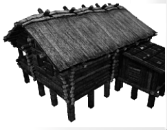
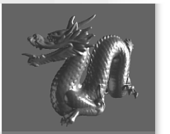

|  |  |
Open Asset Import Library (short name: Assimp) is a portable Open Source library to import various well-known 3D model formats in a uniform manner. The most recent version also knows how to export 3d files and is therefore suitable as a general-purpose 3D model converter. See the feature list.
AssimpView is a Windows-based model viewer. It loads all file formats that Assimp supports and is perfectly suited to quickly inspect 3d assets.
Assimp aims to provide a full asset conversion pipeline for use in game engines / realtime rendering systems of any kind, but it is not limited to this purpose. In the past, it has been used in a wide range of applications.
Written in C++, it is available under a liberal BSD license. There is a C API as well as bindings to various other languages, including C#/.net, Python and D. Assimp loads all input model formats into one straightforward data structure for further processing. This feature set is augmented by various post processing tools, including frequently-needed operations such as computing normal and tangent vectors.